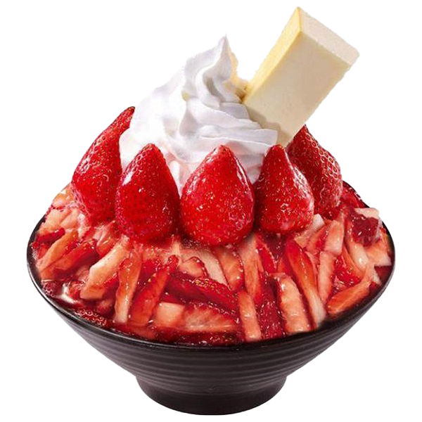
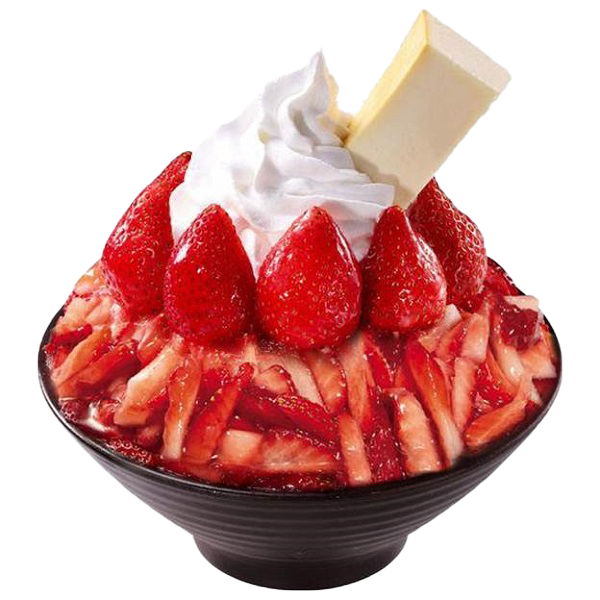

Giới thiệu
Câu chuyện thương hiệu
Khi dự án "Sữa chua trân châu" được đặt lên bàn, có rất nhiều câu hỏi bủa vây lấy chúng tôi. Làm sao để nhận biết một món ăn "đặc sản" nhưng vẫn đảm bảo chất lượng cho từng sản phẩm? Liệu rằng đây có phải là mô hình phát triển bền vững hay chỉ là "cơn sốt" hạ nhiệt theo thời gian? Làm thế nào để tạo tính khác biệt giữa rất nhiều thương hiệu? Có muôn vàn khó khăn, thử thách khi xây dựng thương hiệu để khiến chúng tôi chùn bước. Những chỉ cần một lý do đủ mạnh để tiếp tục, lý do mà chúng tôi bắt đầu.
Thực hiện ước mơ
Anh Phạm Tuấn, được sinh ra trong gia đình có truyền thống làm sữa chua trân châu từ nhừng năm 1990. Món ăn thơm ngon này đã nuôi dường tuổi thơ anh và trở thành niền nhớ thân thường mõi khi anh xa nhà. Không chỉ đối với riêng anh Tuấn, sữa chua trân châu đã len lỏi vào từng ngõ ngách thành phố, trở thành món ăn vặt thân thuộc trong tiềm thức của người dân nơi đây. Đã từ lâu, anh luôn ước mơ nhân bản món ăn này, không chỉ dừng lại ở dải đất chữ S, mà còn vươn ra thị trường quốc tế để giới thiệu với bạn bè năm châu về tinh hoa ẩm thực quê hương. Nhưng ước mơ chỉ thật sự bắt đầu khi anh gặp hai người bạn thuở thiếu thời. Vào một ngày mùa hè, hai anh có dịp ghé thăm anh Tuấn, thưởng thức sữa chua trân châu, mà tới giờ hay gọi vui nhau là "cuộc gặp gỡ ngàn tỷ". Ba chàng trai năm ấy, dù mới chỉ găp mà tưởng như đã thân quen từ lâu. Họ cùng chung lý tưởng sống, cùng phải lòng với sữa chua trân châu, cùng một ước mơ biến món ăn địa phường này trở thành niềm tự hào dân tộc. chua trân châu. Cuộc gặp gỡ
Những khởi đầu thuận lợi
Khác với nhiều thương hiệu F&B ...